Three directions · One fixed room · 23 October 2026
Unit 408 dining area: three directions (A, B, C)
Three dining area directions for Unit 408: DINA Walnut and Linen, DINB Black Frame and Cane and DINC Cocoa and Charcoal.
A comparison for one chosen scheme. Quantities and budgets apply to that scheme. Star (☆) any piece in the schedules to collect it under Picks.
Walnut and Linen
₱98,000–₱122,000Planning range Direction DINBBlack Frame and Cane
₱118,000–₱143,000Planning range Direction DINCCocoa and Charcoal
₱178,000–₱202,000Planning rangeThe fixed brief
What every scheme must satisfy
- 01
All prices assume new purchases. Three distinct sets of visible furniture, lighting, rugs, textiles and decor; no model or family repeats across the schemes or the parallel sets.
- 02
Every piece fits the measured room with clear walkways and door swings; plans use published dimensions and flag the rest.
- 03
Seating, tables and storage are real catalogue products with a supplier photo, price and source link.
Direction DINA
Walnut and Linen
a walnut rubberwood table for six on splayed legs with oatmeal fabric chairs and a whitewash bench on the lane side, an off-white rug, a framed botanical print, eucalyptus in the window corner, a walnut console in the corner by the arch

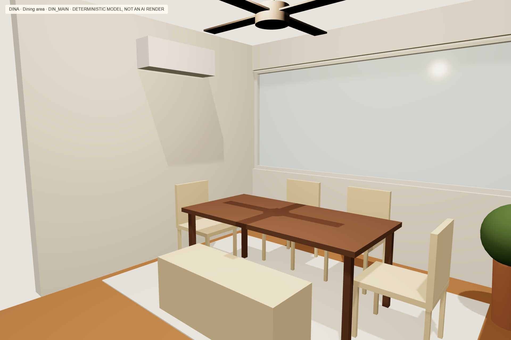

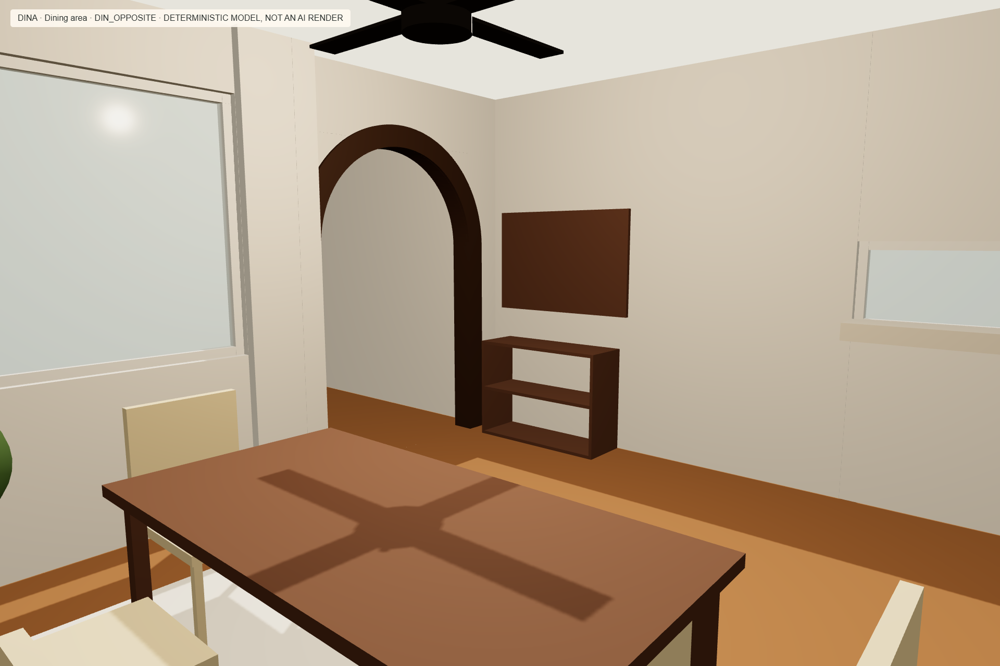

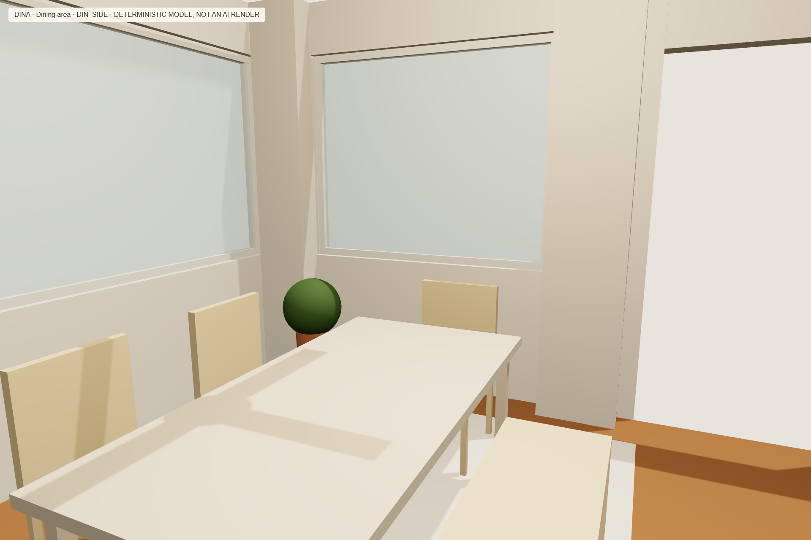

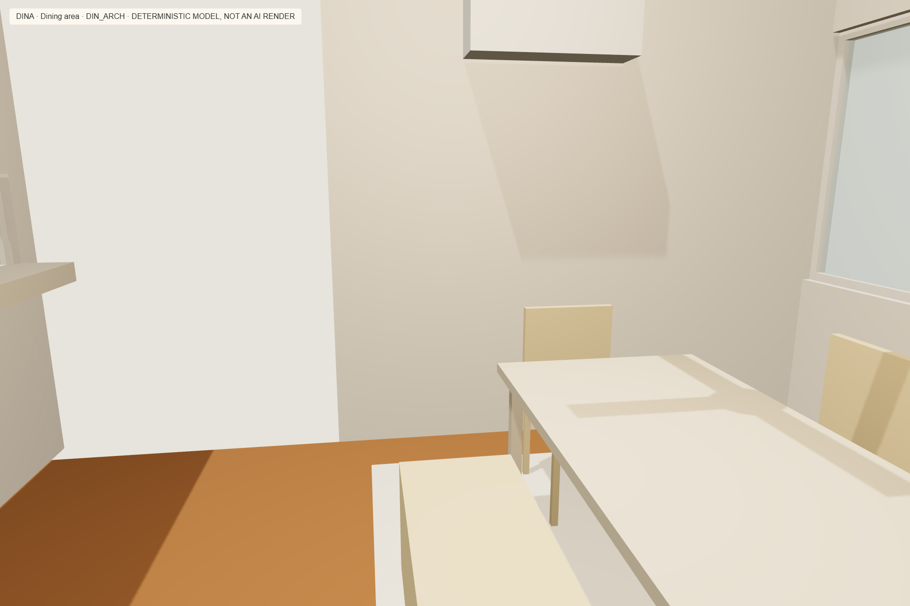
Render pending: where a view has no AI style render yet, its deterministic model view stands in the render's place and is labelled as such. It is not a render.
Model views are deterministic Three.js views of the Unit 408 room shell from its room file (parquet, walls, windows and openings, fixed fittings) with the selected pieces as proxy forms at published or assumed sizes; not AI renders, colours and finishes approximate.
The reference board contains supplier product photographs.

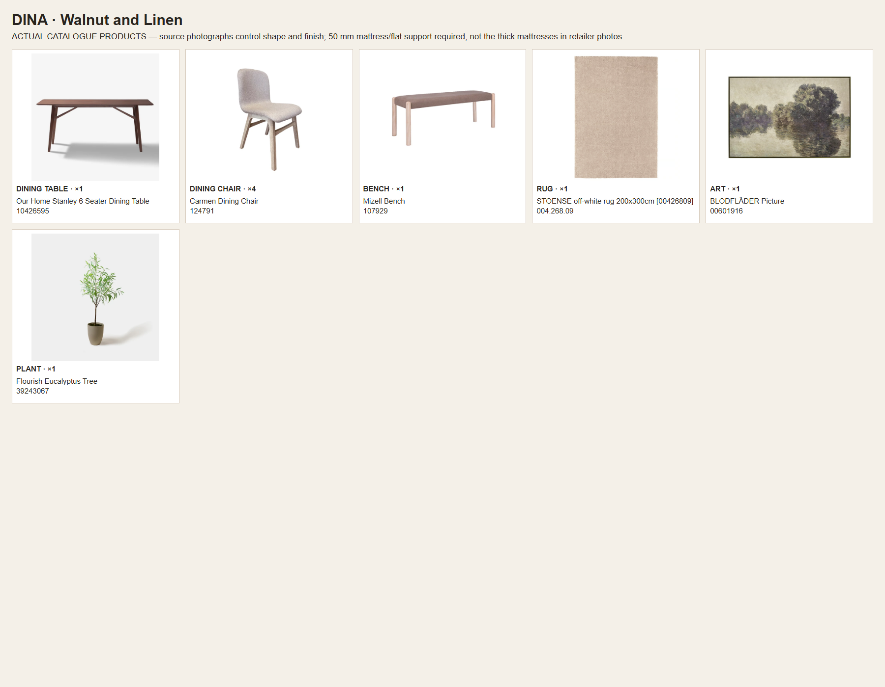

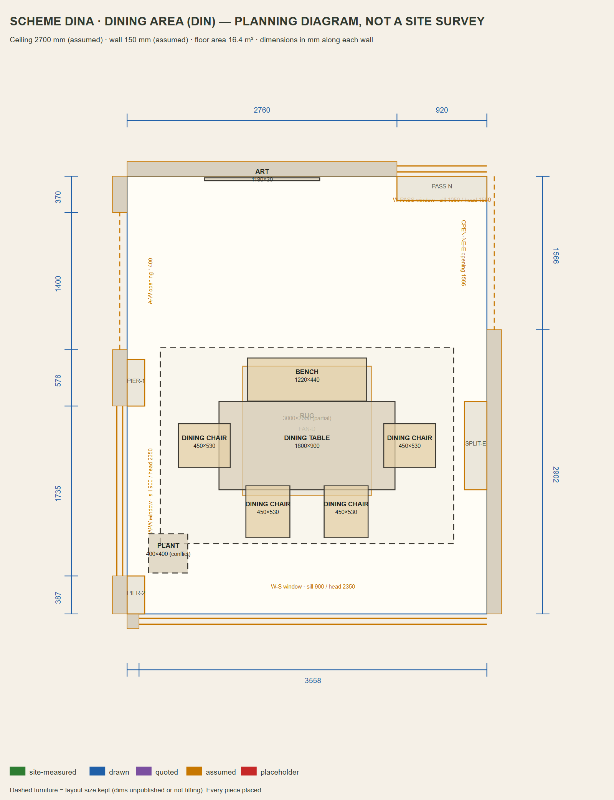
Space & fit
- Conditional fit: the ceiling 2700 is quoted (Ivan, 24 Oct: "the living and dining ceilings are 2.7 m"), not taped; the other values are assumed with a stated basis and none accepted yet: window sills 900 and heads 2350, the round-head arch about 1450 wide with its crown at 2240 and 320 from the north corner, the pass-through counter 1050 and head 1550, the passage to the master bedroom 1566, the existing fan at about (1991, 2600), chairs 500 deep plus a 200 pull-back and curtains 180 off the glass. Drawn or plan-calculated: the stepped west boundary (3831 from the arch wall to the east wall along the north side, 3680 from the west recess wall, mid pier face 215 +/- 15, south-west pier face 273), 4468 deep, pass-through 1071, south window 3558 in four lights, a plain 1735 recess between the piers (no west window: Ivan, 23 Oct). See ASSUMED.md.
- Table 1800 x 900 toward the window and the east wall (DINING-RULES 1; Ivan: 'Yes: the table goes into the corner of the window and the plain wall with the split AC'), centre 2230 from the arch wall and 3075 from the counter wall: 763 from its south edge to the curtain line and 701 from its east end to the east wall, so the window-side and east-end chairs still pull back 200 (48 and 86 to spare); the bench sits on the north side and slides under the table.
- The counter-side walkway from the passage and the pass-through to the arch stays clear (DINING-RULES 2): the 900 band 500-1400 from the counter wall holds nothing; the bench pulled out 200 stops 555 short of it, and the console stands 130 north of it.
- Rug 300 x 200 centred under the table, long side to the window: 101 to the east wall and 213 to the curtain line; the occupied chairs and the bench stand on it, a window-side chair pulled right back has its back legs just off it.
- Corner storage (DINING-RULES 4; Ivan: 'also in the corner we want some type of furniture or shelves', which replaces his earlier 'no buffet'): the San-Yang walnut console, 1050 x 360, against the plain north wall in the corner between the arch and the counter, 175 from the arch wall, no doors. Its west end sits beside the arch's assumed north jamb: tape item 1 decides the real clearance.
- No pendant (the fan stays), split unit high on the east wall over the table, Davies Beige blackout + voile on the south window.
- The existing window unit under the south window is shown removed: the proposed split unit on the east wall replaces it (Ivan 23 Oct: split above the table); removal date pending.
Every scheduled itemDirection DINA · selected pieces7 rows
7 scheduled items
| Starred | Piece & exact variant | Qty / scheme | Unit price | Line price | Source & fulfillment |
|---|---|---|---|---|---|
dining tableOur Home Stanley 6 Seater Dining TableNatural/ Walnut Dimensions & source notesDimensions (mm): width: 1800; depth: 900; height: 750 Notes: Walnut-finish rubberwood top on splayed, braced walnut legs, 1800 x 900 x 750: the size Ivan approved; long side parallel to the window, toward the window and the east wall, centre 2230 from the arch wall and 3075 from the counter wall. The frozen catalogue has no pale-timber six-seater at this length (Our Home Spring and abensonHOME Shera checked), so the pale-ash idea became walnut Price basis: Official online listed price for the exact variant; per item. Cebu branch price and delivered total unconfirmed. |
1DINA | ₱20,655Source price: 2026-09-08 | ₱20,655 | Online listing available | Cebu delivery: unconfirmed | price date 2026-09-08 | Our HomeSupplier page ↗ | |
dining chairCarmen Dining ChairBeige + Whitewash; SKU 124791 Dimensions & source notesDimensions (mm): width: 450; depth: 530; height: 900 Notes: Beige fabric seat and back on whitewash legs; two on the window side and one at each end, the bench takes the lane side Price basis: per listed item; selected exact variant |
4DINA | ₱5,600Source price: 2026-09-08 | ₱22,400 | In stock according to source | Cebu delivery: unconfirmed | price date 2026-09-08 | Mandaue FoamSupplier page ↗ | |
benchMizell BenchWhitewash + Cocoa Milk; SKU 107929 Dimensions & source notesDimensions (mm): width: 1220; depth: 440; height: 465 Notes: 1220 whitewash bench with an upholstered seat on the lane (north) side, slides under the table when not in use Price basis: Official public catalog price in PHP for the selected exact variant; no member discount inferred. |
1DINA | ₱7,250Source price: 2026-09-10 | ₱7,250 | Catalog listed | Cebu delivery: unconfirmed | price date 2026-09-10 | Mandaue FoamSupplier page ↗ | |
![Supplier photograph: STOENSE off-white rug 200x300cm [00426809]](assets/products/DINA-RUG.avif) rugSTOENSE off-white rug 200x300cm [00426809]STOENSE Rug, low pile - off-white 200x300 cm; off-white; 200x300cm; SKU 004.268.09 Dimensions & source notesDimensions (mm): width: 3000; depth: 2000 Notes: Off-white low pile 200 x 300 laid long side to the window; table, chairs and bench all stay on it when pulled back Price basis: Public exact-variant selling price for one rug; delivery and underlay excluded/unverified. No purchase or reservation. Web offer linked to existing retailer record; named branch stock not confirmed. |
1DINA | ₱8,499Source price: 2026-10-20 | ₱8,499 | Source listing available; local stock unverified | Cebu delivery: unconfirmed | price date 2026-10-20 | IKEASupplier page ↗ | |
 artBLODFLÄDER PictureBLODFLÄDER Picture, The Seine at Giverny, 118x78 cm; article 00601916 Dimensions & source notesDimensions (mm): width: 1180; depth: 30; height: 780 Notes: Framed print 118 x 78 in beige, brown and green on the plain north wall, centred above the corner console Price basis: Official Philippine product-page price for the complete selected listing/variant; included quantity follows the exact specification variant. Delivery and assembly are additional. |
1DINA | ₱2,999Source price: 2026-09-10 | ₱2,999 | In stock according to source | Cebu delivery: unconfirmed | price date 2026-09-10 | IKEASupplier page ↗ | |
buffetConsole Table Walnut 210029San-Yang Furniture Console Table Walnut 210029; Walnut; One console table. Dimensions & source notesDimensions (mm): width: 1050; depth: 360; height: 760 Notes: Walnut-finish console 1050 x 360 x 760, top and one open shelf on a slim dark grey metal frame; against the plain north wall in the corner between the arch and the counter (Ivan: 'also in the corner we want some type of furniture or shelves'), open, no doors Price basis: One console table. Selected-SKU salePrice matched the visible product-page price. Struck reference price recorded as Regular price; checkout, vouchers and delivery charges not tested. |
1DINA | ₱2,518.65Source price: 2026-09-09 | ₱2,518.65 | Online listing available | Cebu delivery: unconfirmed | price date 2026-09-09 | San-YangSupplier page ↗ | |
plantFlourish Eucalyptus TreeDefault Title Dimensions & source notesDimensions (mm): width: 500; depth: 500; height: 1700 Notes: Faux eucalyptus tree 170 high in the south-west corner by the window Price basis: Official public online catalog price for the selected variant; per item. Cebu branch quotation and delivered total unconfirmed. |
1DINA | ₱9,539.10Source price: 2026-09-10 | ₱9,539.10 | Online listing available | Cebu delivery: unconfirmed | price date 2026-09-10 | FlourishSupplier page ↗ |


Direction DINB
Black Frame and Cane
a dark cement-look top on a slim black steel frame, six cane-back chairs with almond-tan seats on slim light wood-look legs, a light grey and beige patchwork rug, a black and grey canvas, a tall faux olive-style tree in the corner, a black-frame console in the corner by the arch

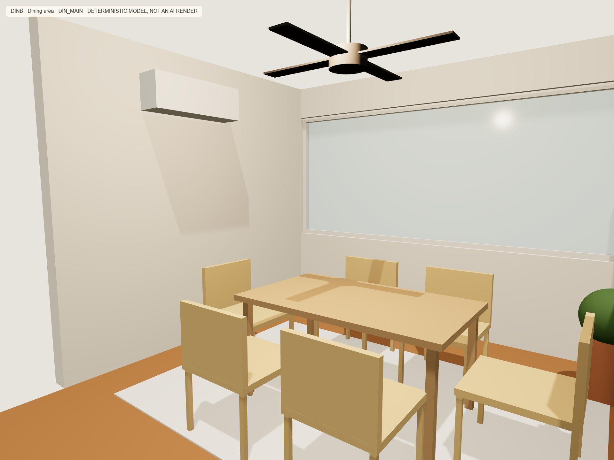

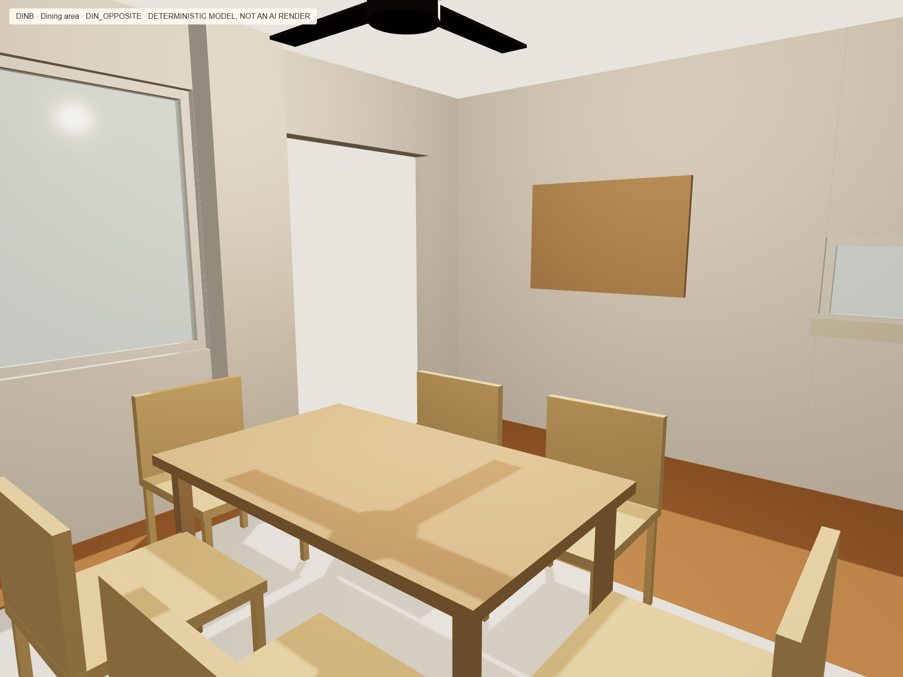

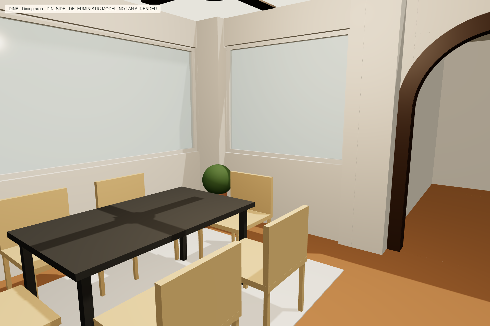

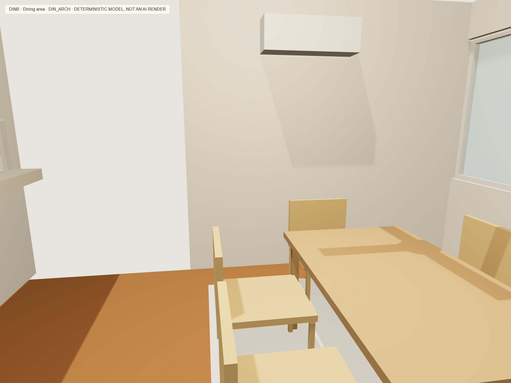
Render pending: where a view has no AI style render yet, its deterministic model view stands in the render's place and is labelled as such. It is not a render.
Model views are deterministic Three.js views of the Unit 408 room shell from its room file (parquet, walls, windows and openings, fixed fittings) with the selected pieces as proxy forms at published or assumed sizes; not AI renders, colours and finishes approximate.
The reference board contains supplier product photographs.

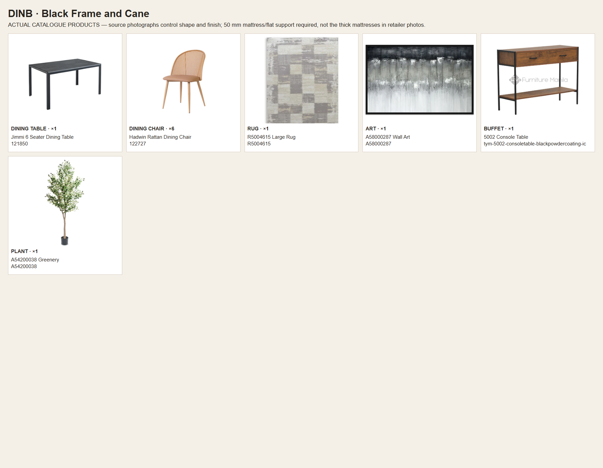

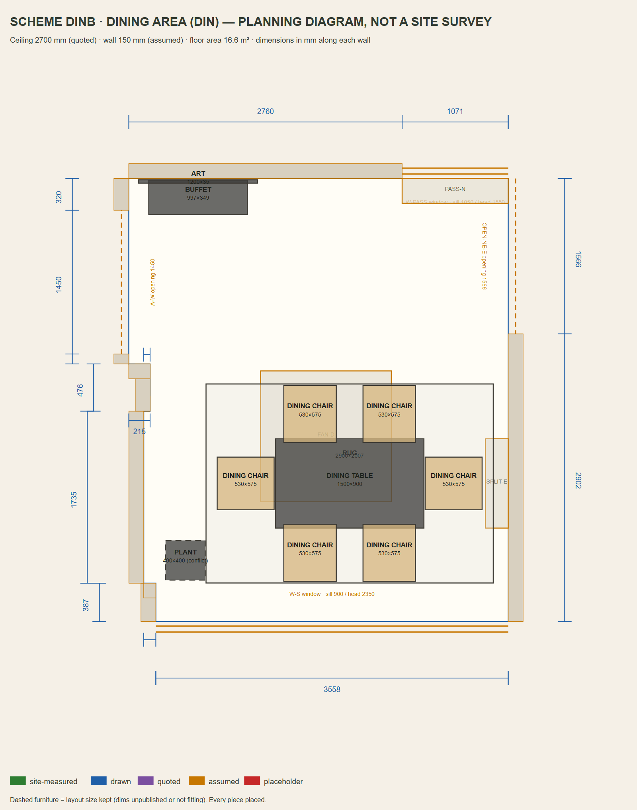
Space & fit
- Conditional fit: the ceiling 2700 is quoted (Ivan, 24 Oct: "the living and dining ceilings are 2.7 m"), not taped; the other values are assumed with a stated basis and none accepted yet: window sills 900 and heads 2350, the round-head arch about 1450 wide with its crown at 2240 and 320 from the north corner, the pass-through counter 1050 and head 1550, the passage to the master bedroom 1566, the existing fan at about (1991, 2600), chairs 500 deep plus a 200 pull-back and curtains 180 off the glass. Drawn or plan-calculated: the stepped west boundary (3831 from the arch wall to the east wall along the north side, 3680 from the west recess wall, mid pier face 215 +/- 15, south-west pier face 273), 4468 deep, pass-through 1071, south window 3558 in four lights, a plain 1735 recess between the piers (no west window: Ivan, 23 Oct). See ASSUMED.md.
- Table 1500 x 900 toward the window and the east wall (DINING-RULES 1; Ivan: 'Yes: the table goes into the corner of the window and the plain wall with the split AC'), centre 2230 from the arch wall and 3075 from the counter wall: 763 from its south edge to the curtain line and 851 from its east end to the east wall, so the window-side and east-end chairs still pull back 200 (26 and 64 to spare); six seats as 2 + 2 + 1 + 1.
- The counter-side walkway from the passage and the pass-through to the arch stays clear (DINING-RULES 2): the 900 band 500-1400 from the counter wall holds nothing; the north-side chairs pulled back 200 stop 488 short of it, and the console stands 136 north of it.
- Rug 290 x 200 centred under the table, long side to the window: 151 to the east wall and 210 to the curtain line; the occupied chairs stand on it, a window-side chair pulled right back has its back legs just off it.
- Corner storage (DINING-RULES 4; Ivan: 'also in the corner we want some type of furniture or shelves', which replaces his earlier 'no buffet'): the Furniture Manila 5002 console, 997 x 349, against the plain north wall in the corner between the arch and the counter, 202 from the arch wall, no doors. Its west end sits beside the arch's assumed north jamb: tape item 1 decides the real clearance.
- No pendant (the fan stays), split unit high on the east wall over the table, Davies Beige blackout + voile on the south window.
- The existing window unit under the south window is shown removed: the proposed split unit on the east wall replaces it (Ivan 23 Oct: split above the table); removal date pending.
Every scheduled itemDirection DINB · selected pieces6 rows
6 scheduled items
| Starred | Piece & exact variant | Qty / scheme | Unit price | Line price | Source & fulfillment |
|---|---|---|---|---|---|
dining tableJimmi 6 Seater Dining TableCement + Black; SKU 121850 Dimensions & source notesDimensions (mm): width: 1500; depth: 900; height: 750 Notes: Dark cement-look top (variant Cement + Black) on a slim black powder-coated steel frame, 1500 x 900 x 750: the compact alternative to 1800 (Ivan: '1800x900 feels massive table'); long side parallel to the window Price basis: per listed item; selected exact variant |
1DINB | ₱6,090Source price: 2026-09-08 | ₱6,090 | In stock according to source | Cebu delivery: unconfirmed | price date 2026-09-08 | Mandaue FoamSupplier page ↗ | |
dining chairHadwin Rattan Dining ChairAlmond; SKU 122727 Dimensions & source notesDimensions (mm): width: 530; depth: 575; height: 840 Notes: Curved woven cane back and almond-tan upholstered seat on a slim frame with light wood-look legs (listing: metal tube frame, Almond Black; the product photo shows light legs); 2 + 2 + 1 + 1 Price basis: Per listed item; selected exact variant |
6DINB | ₱5,150Source price: 2026-09-08 | ₱30,900 | Available online | Cebu delivery: unconfirmed | price date 2026-09-08 | Mandaue FoamSupplier page ↗ | |
rugR5004615 Large RugR5004615 Large Rug; manufacturer SKU R5004615; Default Title; Light Gray Dimensions & source notesDimensions (mm): width: 2900; depth: 2007; height: 9.906 Notes: Light grey and beige patchwork rug (listed as Light Gray; the product photo shows the patchwork) 200 x 290 laid long side to the window; every pulled-back chair stays on it. Replaces the Our Home Metro Weave, which the living and master sets claimed in parallel Price basis: Per exact listed official Philippine storefront variant; verify quantity/configuration in listing. Cebu branch quotation is not established. |
1DINB | ₱23,600Source price: 2026-09-10 | ₱23,600 | sold_out_online | Cebu delivery: unconfirmed | price date 2026-09-10 | AshleySupplier page ↗ | |
artA58000287 Wall ArtA58000287 Wall Art; manufacturer SKU A58000287; Default Title; Black/Gray Dimensions & source notesDimensions (mm): width: 1200; depth: 35; height: 800 Notes: Black/Gray canvas 120 x 80 on the plain north wall above the corner console; replaces the Ashley A58000378, which set GHI scheme I already claims Price basis: Per exact listed official Philippine storefront variant; verify quantity/configuration in listing. Cebu branch quotation is not established. |
1DINB | ₱11,000Source price: 2026-09-10 | ₱11,000 | sold_out_online | Cebu delivery: unconfirmed | price date 2026-09-10 | AshleySupplier page ↗ | |
buffet5002 Console TableSKU tym-5002-consoletable-blackpowdercoating-ic Dimensions & source notesDimensions (mm): width: 996.9; depth: 349.2; height: 730.2 Notes: Black powder-coated steel console 997 x 349 x 730 with a brown wood-look two-drawer box and a lower shelf; against the plain north wall in the corner between the arch and the counter, no doors Price basis: Published price for the selected listing variant |
1DINB | ₱6,650Source price: 2026-09-10 | ₱6,650 | In stock according to source | Cebu delivery: unconfirmed | price date 2026-09-10 | Furniture ManilaSupplier page ↗ | |
plantA54200038 GreeneryA54200038 Greenery; manufacturer SKU A54200038; Default Title; Green Dimensions & source notesDimensions (mm): width: 762; depth: 762; height: 1829 Notes: Faux greenery 182 high in the south-west corner by the window; replaces the Crate and Barrel cactus, which living set B already claims Price basis: Per exact listed official Philippine storefront variant; verify quantity/configuration in listing. Cebu branch quotation is not established. |
1DINB | ₱14,000Source price: 2026-09-10 | ₱14,000 | online_variant_available_cebu_stock_unconfirmed | Cebu delivery: unconfirmed | price date 2026-09-10 | AshleySupplier page ↗ |


Direction DINC
Cocoa and Charcoal
solid rubberwood in cocoa on splayed braced legs with six tall dark-grey upholstered chairs, a wide-striped taupe and greige rug, a brown Highland-cow canvas, a schefflera in the corner, a walnut-and-stone console in the corner by the arch

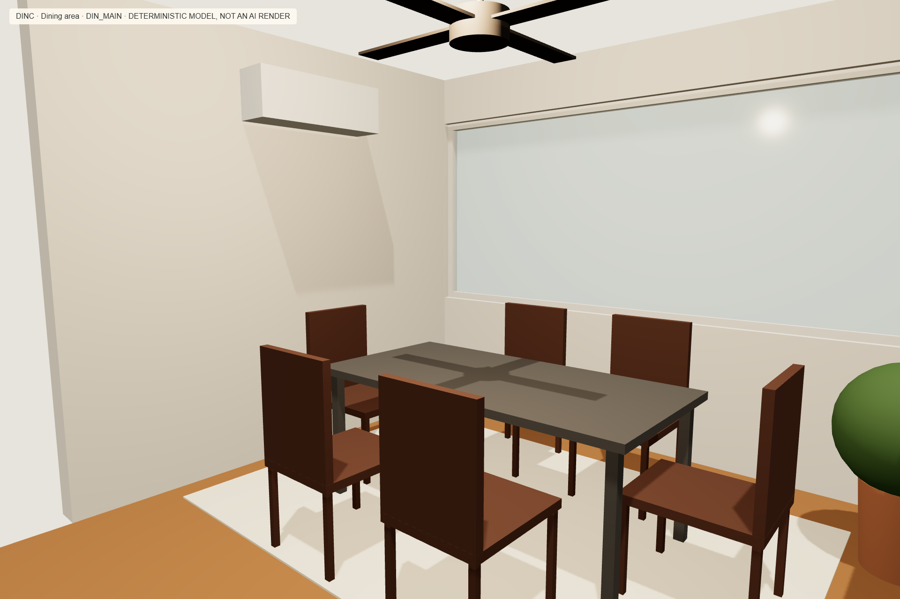

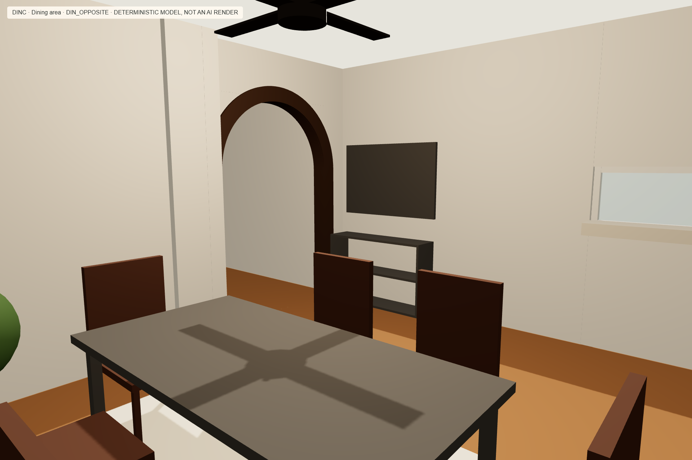

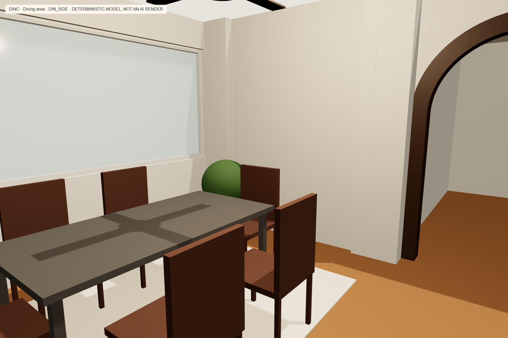

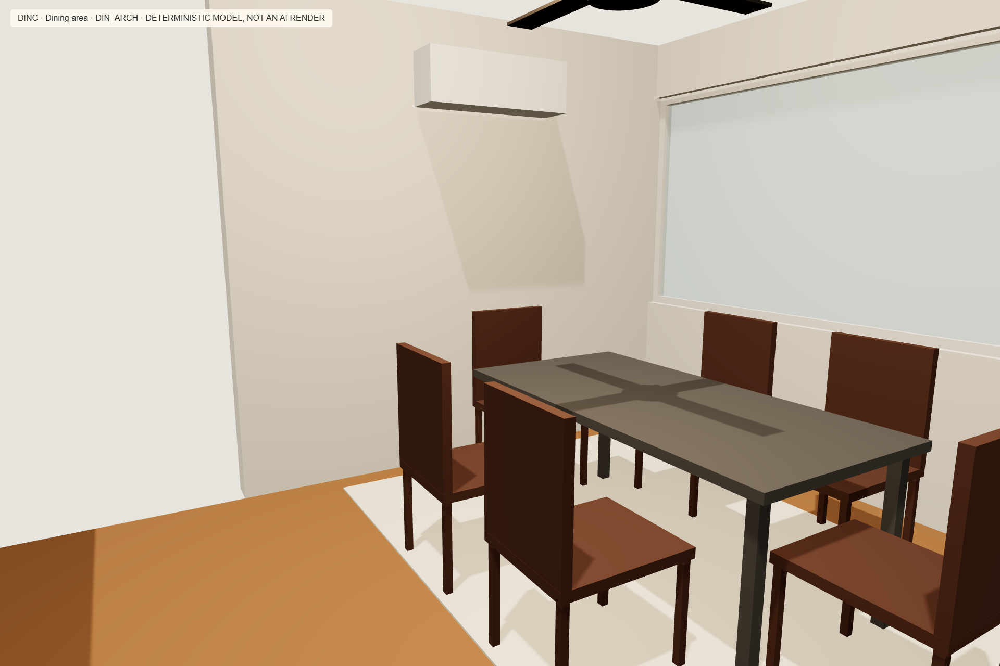
Render pending: where a view has no AI style render yet, its deterministic model view stands in the render's place and is labelled as such. It is not a render.
Model views are deterministic Three.js views of the Unit 408 room shell from its room file (parquet, walls, windows and openings, fixed fittings) with the selected pieces as proxy forms at published or assumed sizes; not AI renders, colours and finishes approximate.
The reference board contains supplier product photographs.

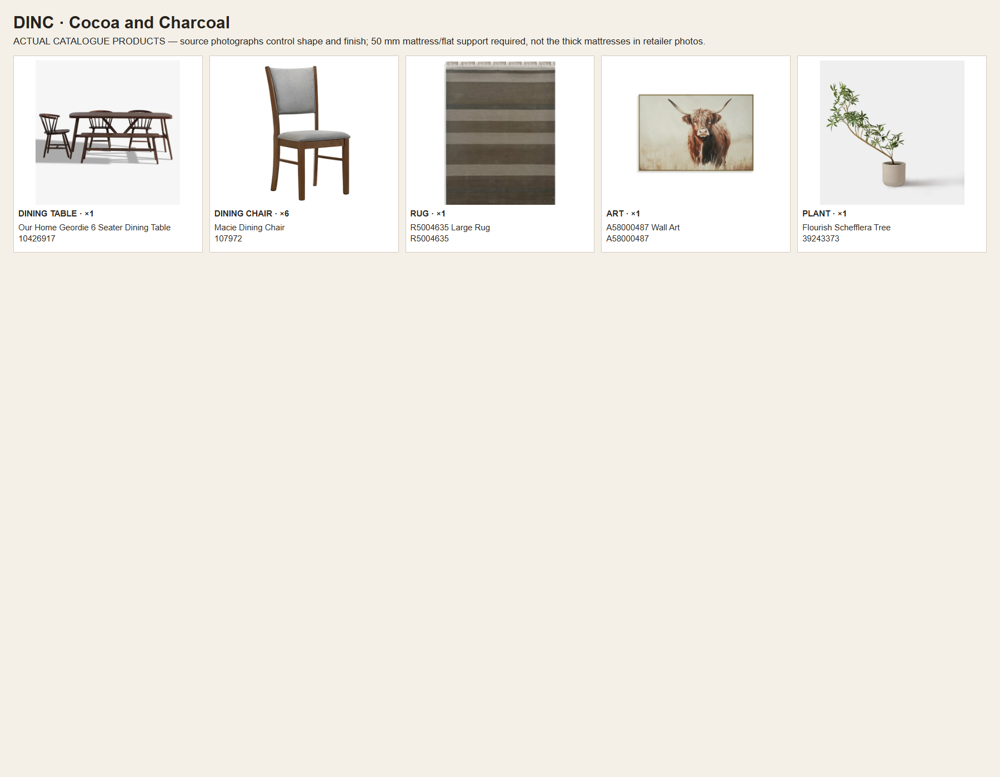

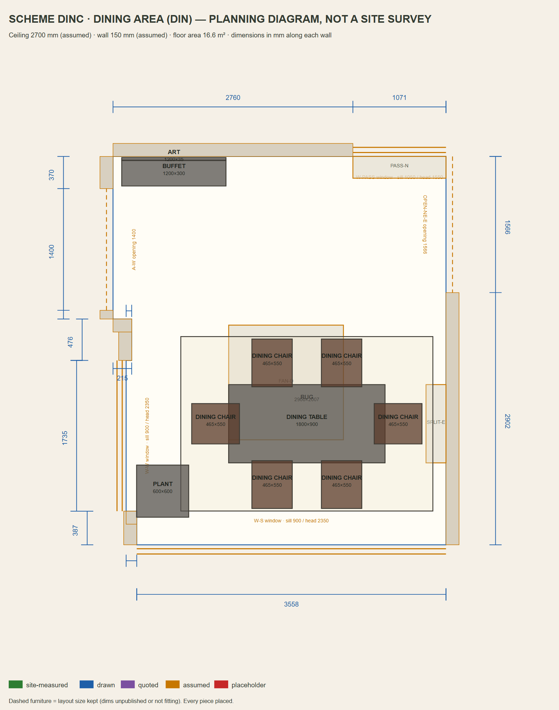
Space & fit
- Conditional fit: the ceiling 2700 is quoted (Ivan, 24 Oct: "the living and dining ceilings are 2.7 m"), not taped; the other values are assumed with a stated basis and none accepted yet: window sills 900 and heads 2350, the round-head arch about 1450 wide with its crown at 2240 and 320 from the north corner, the pass-through counter 1050 and head 1550, the passage to the master bedroom 1566, the existing fan at about (1991, 2600), chairs 500 deep plus a 200 pull-back and curtains 180 off the glass. Drawn or plan-calculated: the stepped west boundary (3831 from the arch wall to the east wall along the north side, 3680 from the west recess wall, mid pier face 215 +/- 15, south-west pier face 273), 4468 deep, pass-through 1071, south window 3558 in four lights, a plain 1735 recess between the piers (no west window: Ivan, 23 Oct). See ASSUMED.md.
- Table 1800 x 900 toward the window and the east wall (DINING-RULES 1; Ivan: 'Yes: the table goes into the corner of the window and the plain wall with the split AC'), centre 2230 from the arch wall and 3075 from the counter wall: 763 from its south edge to the curtain line and 701 from its east end to the east wall, so the window-side and east-end chairs still pull back 200 (38 and 76 to spare); six seats as 2 + 2 + 1 + 1.
- The counter-side walkway from the passage and the pass-through to the arch stays clear (DINING-RULES 2): the 900 band 500-1400 from the counter wall holds nothing; the north-side chairs pulled back 200 stop 500 short of it, and the console stands 160 north of it.
- Rug 290 x 200 centred under the table, long side to the window: 151 to the east wall and 210 to the curtain line; the occupied chairs stand on it, a window-side chair pulled right back has its back legs just off it.
- Corner storage (DINING-RULES 4; Ivan: 'also in the corner we want some type of furniture or shelves', which replaces his earlier 'no buffet'): the Mandaue Foam Blythe console, 1200 x 300, against the plain north wall in the corner between the arch and the counter, 100 from the arch wall, no doors. Its west end sits beside the arch's assumed north jamb: tape item 1 decides the real clearance.
- No pendant (the fan stays), split unit high on the east wall over the table, Davies Beige blackout + voile on the south window.
- The existing window unit under the south window is shown removed: the proposed split unit on the east wall replaces it (Ivan 23 Oct: split above the table); removal date pending.
Every scheduled itemDirection DINC · selected pieces6 rows
6 scheduled items
| Starred | Piece & exact variant | Qty / scheme | Unit price | Line price | Source & fulfillment |
|---|---|---|---|---|---|
dining tableOur Home Geordie 6 Seater Dining TableCocoa / 6 Seater Dimensions & source notesDimensions (mm): width: 1800; depth: 900; height: 750 Notes: Solid rubberwood in cocoa, 1800 x 900 x 750: the size Ivan approved; long side parallel to the window, toward the window and the east wall, centre 2230 from the arch wall and 3075 from the counter wall Price basis: Official online listed price for the exact variant; per item. Cebu branch price and delivered total unconfirmed. |
1DINC | ₱27,950Source price: 2026-09-08 | ₱27,950 | Online listing unavailable | Cebu delivery: unconfirmed | price date 2026-09-08 | Our HomeSupplier page ↗ | |
dining chairMacie Dining ChairDark Grey; SKU 107972 Dimensions & source notesDimensions (mm): width: 465; depth: 550; height: 985 Notes: Tall upholstered back and seat in dark grey fabric (variant Dark Grey, as the product photo) on dark legs; 2 + 2 + 1 + 1. The camel idea had no priced offer in the frozen catalogue Price basis: Per listed item; selected exact variant; price retained from existing official snapshot dated 2026-09-08; fresh refresh rate-limited |
6DINC | ₱5,400Source price: 2026-09-08 | ₱32,400 | Unknown | Cebu delivery: unconfirmed | price date 2026-09-08 | Mandaue FoamSupplier page ↗ | |
rugR5004635 Large RugR5004635 Large Rug; manufacturer SKU R5004635; Default Title; Brown Dimensions & source notesDimensions (mm): width: 2900; depth: 2007; height: 9.906 Notes: Wide-striped taupe-brown and greige polyester rug with fringed ends (listed as Brown) 200 x 290 laid long side to the window; every pulled-back chair stays on it. Third choice: the IKEA LOHALS jute is claimed by living set A and the Ashley R5005135 orange by an Astra design Price basis: Per exact listed official Philippine storefront variant; verify quantity/configuration in listing. Cebu branch quotation is not established. |
1DINC | ₱50,700Source price: 2026-09-10 | ₱50,700 | online_variant_available_cebu_stock_unconfirmed | Cebu delivery: unconfirmed | price date 2026-09-10 | AshleySupplier page ↗ | |
artA58000487 Wall ArtA58000487 Wall Art; manufacturer SKU A58000487; Brown Dimensions & source notesDimensions (mm): width: 1200; depth: 35; height: 800 Notes: Brown-toned Highland cow canvas 120 x 80 on the plain north wall above the corner console Price basis: Per listed item, exact official Philippine online variant price; not a confirmed Cebu branch quotation. |
1DINC | ₱15,000Source price: 2026-09-08 | ₱15,000 | online_variant_available_cebu_stock_unconfirmed | Cebu delivery: unconfirmed | price date 2026-09-08 | AshleySupplier page ↗ | |
buffetBlythe Console TableSingle published variant; SKU 140955 Dimensions & source notesDimensions (mm): width: 1200; depth: 300; height: 765 Notes: Dark walnut-brown console 1200 x 300 x 765, two drawers under a cream stone-look top, a low shelf and black splayed legs; against the plain north wall in the corner between the arch and the counter, no doors Price basis: Official public catalog price in PHP for the selected exact variant; no member discount inferred. |
1DINC | ₱7,200Source price: 2026-09-10 | ₱7,200 | Catalog listed | Cebu delivery: unconfirmed | price date 2026-09-10 | Mandaue FoamSupplier page ↗ | |
plantFlourish Schefflera TreeDefault Title Dimensions & source notesDimensions (mm): width: 600; depth: 600; height: 1350 Notes: Faux schefflera tree 135 high in the south-west corner Price basis: Official public online catalog price for the selected variant; per item. Cebu branch quotation and delivered total unconfirmed. |
1DINC | ₱12,779.10Source price: 2026-09-10 | ₱12,779.10 | Online listing available | Cebu delivery: unconfirmed | price date 2026-09-10 | FlourishSupplier page ↗ |


Your shortlist
Starred pieces
Star ☆ any piece in the schedules above and it is listed here by direction with a running total. Stars are saved in this browser only. Use Copy link to send them to someone else (the link opens with the same stars) or Copy as text for a message.
No starred pieces yet.
Plain-text list
Compare the complete plan
Budgets, with the open costs visible
Quoted work and fulfillment remain unresolved. The planning ranges include the allowances below, plus 10% contingency, rounded up to ₱1,000.
| Per chosen scheme | DINAWalnut and Linen | DINBBlack Frame and Cane | DINCCocoa and Charcoal |
|---|---|---|---|
| Selected design pieces | ₱73,860.75 | ₱92,240 | ₱146,029.10 |
| Common essentials & room treatments | ₱0 | ₱0 | ₱0 |
| Priced schedule subtotal | ₱73,860.75 | ₱92,240 | ₱146,029.10 |
| Working planning range | ₱98,000 to ₱122,000 | ₱118,000 to ₱143,000 | ₱178,000 to ₱202,000 |
Planning allowances ₱15,000–₱37,000 before contingency
| Work or provision | Low | High | Basis & limits |
|---|---|---|---|
| Cebu freight, delivery and handling | ₱5,000 | ₱15,000 | Planning allowance only; no shipping rates/address allocation obtained. Overseas freight not included. |
| TV/art/pendant installation and assembly | ₱5,000 | ₱10,000 | Planning allowance only; installer must specify anchors and verify substrate. Includes no structural rebuilding. |
| Paint touch-up and site coordination | ₱5,000 | ₱12,000 | Estimator reserve, not a contractor quote. |
Shared foundations
Common essentials & fixed room treatments
The fixed curtains and listed technical essentials are common room provisions. Scheme letters show where each row applies; quantities are per chosen scheme.
Every scheduled itemCommon room schedule0 rows
0 scheduled items
| Starred | Piece & exact variant | Qty / scheme | Unit price | Line price | Source & fulfillment |
|---|
Before ordering
Resolve these procurement gates
- Prices are catalogue references with each line's own price date. Product existence and photos are verified; exact Cebu stock, address delivery and checkout totals are not.
- Pieces flagged "dims unpublished" in the room placement report keep the layout size; measure them at the showroom before ordering.
- Delivery path for the sofa, dining table and buffet (lift, corridor, door widths) to be confirmed with the building before ordering.
- Style renders are AI interpretations painted over the dimension-led model views; supplier photo boards, measured plans and the item schedule are the acceptance basis.
Source notes
- Catalogue of record: the frozen Airtable catalogue snapshot. No Airtable writes.
- 19 visible selections, each with a supplier photo where one was captured; models and families were checked against the earlier schemes and the parallel sets' claims (uniqueness.py).
- Product photos are unaltered retailer references. Plans use published dimensions where available and flag defaults where not.
- PH retailer routes establish real-product sourcing. Cebu fulfilment requires checkout/branch confirmation; no supplier contact or order has been made.